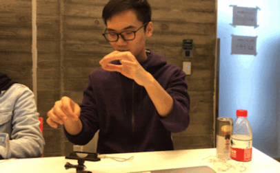

Therem{AI}n
2018/AI/Music What this project is focusing on is how AI can be used to work hand in hand with an activity that is inherently special to human beings, the creation of music. We are attemping to go beyond the novelty of an artificial intelligence-based performance and focusing on how AI can accompany, assist, and respond to our creative process.
Projects of this type have already been done before with other instruments, frequently with a piano, as MIDI input is simple and easy to do with a plug and play piano keyboard. What we instead wanted to do was create a digital theremin using a LeapMotion for hand detection and tracking, mainly for the ease of input and a lack of tools/resources for creating an actual theremin (but that's potentially on the to-do list), and then input it as MIDI into a pretrained neural network using Google Magenta.
The user simply waves their hands above the LeapMotion, and after they stop playing the neural network generates a melody to be played back to them with the tone and style of a theremin.
The relationship that we wanted to establish with this AI was one used for the purpose of breaking patterns. Neural networks often give unexpected outputs that outwit even the most experienced GO players, so my hypothesis is that AI can offer up patterns and inspirations that go beyond even the immense amount of knowledge that an experienced musician would be familiar with. This would go beyond listening to new music for inspiration, it's listening to a new understanding of music for inspiration.
Collaborators:Sam Hu and Aven Zhou